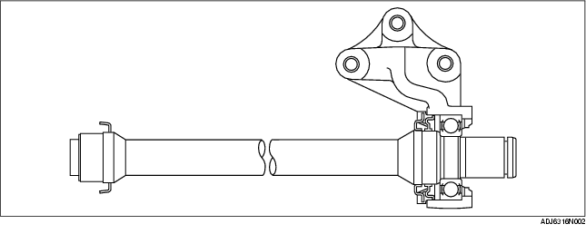

Joint shaft construction
• Due to the adoption of a joint shaft, which has right and left shafts of equal length, torque steer* when suddenly accelerating from a standing start is greatly reduced, thus improving driving performance.

*Torque steer
The tendency of the vehicle to pull to one side due to the difference in right and left moment created by traction when accelerating in general or from a standing start.